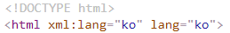

1.시작하기 전에...
1.1websquare.html을 수정하여 기본언어 설정하기
1.1.1websquare.html파일 찾기
websquare.html은 웹스퀘어가 설치된 위치부터 아래 경로를 찾아서 들어갑니다.
C:\websquare\plugins\com.inswave.websquare.webapp.engine_1.0.0.201712131047\websquare\websquare.html
C:\websquare\plugins\com.inswave.websquare.webapp.engine_1.0.0.201712131047\websquare\websquare.html
1.1.2websquare.html에 기본언어 표시
websquare.html에 아래와 같이 명시해 주어야 합니다.
예) html xml:lang="ko" lang="ko"
예) html xml:lang="ko" lang="ko"

[그림 1-1]html_set
1.1.3건너뛰기 링크(Skip Navigation)
tab focus이동시 건너뛰기 링크를 포함하여야 합니다.
<xf:group id="" style="" class="skip_navi" tagname="ul"> <xf:group id="" style="" tagname="li"> <w2:anchor id="" style="" href="#gnb" outerDiv="false"> <xf:label><![CDATA[전체메뉴 바로가기]]></xf:label> </w2:anchor> </xf:group> <xf:group id="" style="" tagname="li"> <w2:anchor id="" style="" href="#lnb" outerDiv="false"> <xf:label><![CDATA[왼쪽메뉴 바로가기]]></xf:label> </w2:anchor> </xf:group> <xf:group id="" style="" tagname="li"> <w2:anchor id="" style="" href="#contents" outerDiv="false"> <xf:label><![CDATA[본문 바로가기]]></xf:label> </w2:anchor> </xf:group> </xf:group>
레이아웃의 구조에 따라 GNB메뉴, Left메뉴, Container 영역 등 으로 추가하여 링크를 연결해 줍니다.